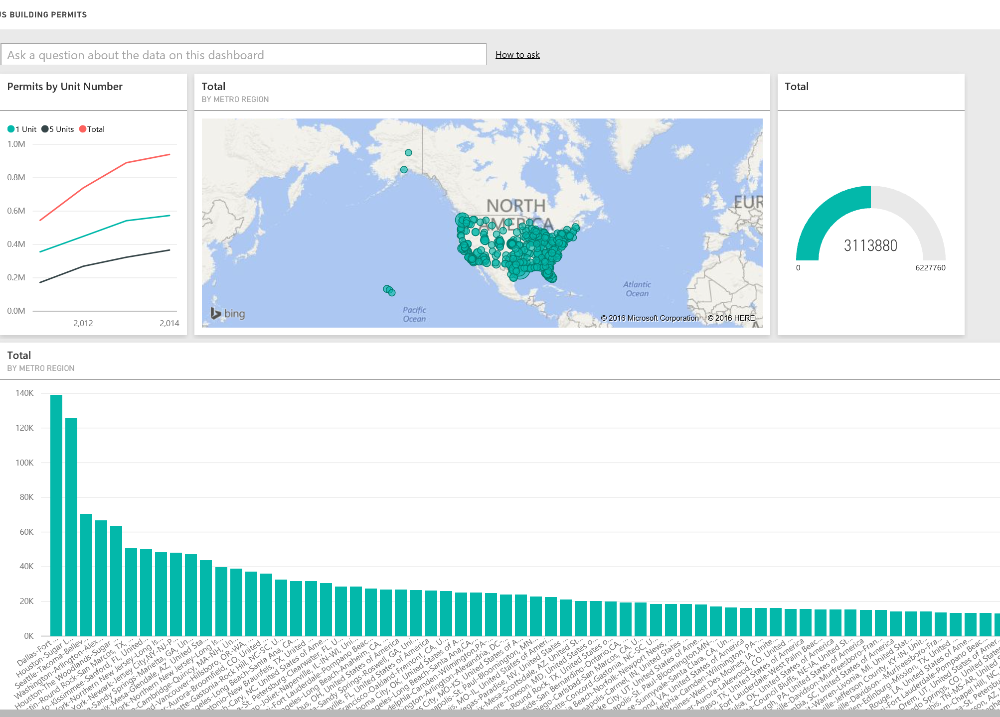
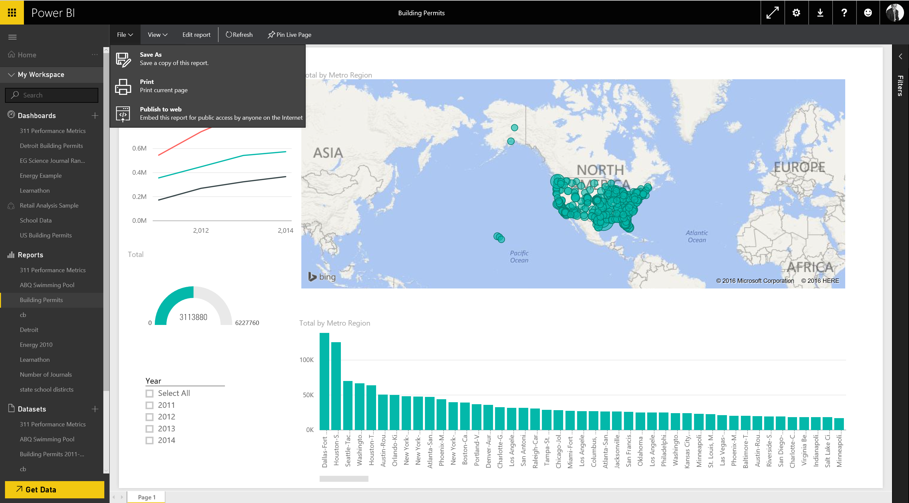

As part of the Commerce Data Usability Project, Microsoft Chicago in collaboration with the Commerce Data Service has created a tutorial that introduces PowerBI as a way to explore Commerce data. If you have question, feel free to reach out to the Commerce Data Service at DataUsability@doc.gov.
SO REPORT ME!
Let's start with the absolute basic. We will see how many residential permits were issued in the US over time. Line charts are good for time series, so let's create a report in three clicks. First, click on the line chart icon under visualizations:

Next, simply click the fields you want to track. Power BI will figure out the axis. Click year and click total. Right away, you have a simple line chart. Let's break it down to see how big projects (with 5 or more units) versus how many small projects (1 unit) compared. Click on the 1-unit check box under Fields, then click on the 5 Units. Now you have three lines and can spot the trends.
Notice that it gave a name and a legend above the chart. You can change that title if you want it to be more meaningful. Click on the Edit icon (the little pencil in the Visualize pane), and expand the Title options. We can call this "Permits By Unit Number". Move the chart to the upper right and make room for our next chart.
We are now going to compare the total building permits by geography. The geography in this data set is based on metropolitan area. For example, the Chicago area is represented by the name "Chicago-Joliet-Naperville, IL-IN-WI". Power BI will do its best to figure out the optimal chart type even if you do not specify what that chart type is. Let's try this. Click on a blank space, then simply click on the Total field. You can see a column chart starting to form. Now click on Metro Region (our geography). Now you have a column chart with each column representing a metropolitan area. Stretch it to the right so that it horizontally reaches across the screen, and you will have something like this:

Something very interesting has happened here. Without any user interaction, these two visuals are automatically tied together. Power BI figures out the relationship on its own. For example, click on one of the columns representing a metro area. Notice that not only has the column chart put the focus on that area, the line chart is automatically filtered for that area as well! Click on other metro areas and see how it changes.
Of course, this being geographic data, a map would be nice. Click in blank space in the upper right, and click on the World Map visual. You can use drag and drop to place the fields on the visual pane. For example, let's drag Metro Region to location. You will see circles across the U.S. Expand the size of the visual by dragging from one of the corners. Zoom in and you can get a better view. Now we need a field to represent the size of the circle. Drag the Total field to value. Zoom in until you can see the different sizes of the circles. Note that in data sets where latitude and longitude are available, you can use these as location fields if that level of precision is warranted.
Let's add a couple of more visuals and then share these in the form of a dashboard. Arrange your pallet so that it looks like this:
We will add two more items to that space in the lower left. First, a simple gauge that shows the total permits issued in the 4-year period. Click on the blank space gauge visual in the Visualizations pane. Drag the Total field as the value. Now make it small enough to add one more item – the slicer.
A slicer allows you to filter all of your data using a check box. Click on the last blank space on your pallet on the lower left and then click on the Slicer from the Visualization pane. Now, all you have to do is tell it how you want the user to be able to "slice" the data. Drag the Year field into the Values. Resize and place it so that it looks like this:

You have one more task. We want to give our users the option of selecting all years, with one click. With the slicer selected, click on the Edit icon. Expand the Selection Controls and turn on Select All and turn Single Select off. Now go back and play with the check boxes on the Slicer and see what happens to the rest of your visuals.
GOTTA DASH!
You can take items from your various reports and create a dashboard for yourself or your users. Personalized dashboards allow you to monitor your most important data, at a glance. A dashboard can combine all sorts of data (on-premises and cloud-born data) in a single pane of glass, providing a consolidated view across the organization regardless of where the data lives. Each metric, or insight, is displayed on the dashboard as a tile. In this simple case, however, we are going to use a single source of our data.
First, you need to decide which elements should appear on your dashboard. Hover over your visualizations and you will see a Push Pin icon in the upper right hand corner. This allows you to "pin" that visual to the dashboard of your choice. Choose a visual and click on the Push Pin. The first time you do it, it will ask you to save the report (if you haven't already). Then it will ask you which Dashboard you want to pin it to.

You can pin it to an existing dashboard or a new one. Chose New dashboard and give it a name such as "US Building Permits". Do the same for the rest of the visuals (you won't be able to pin the slicer, and you will see why you don't need to later). Now adjust your visuals the way you would like them, leaving room for one more widget that we will add next. For example:

Click on add widget in the upper right. You will be able to add images, web content, text boxes, and video. Click on Video. Use the URL https://youtu.be/vaPIYb7NDRcfor the video URL and Commerce Data Advisory Committee Meeting for your title. Now you have YouTube video embedded right where your users need it, near the data. Move that widget to the upper right hand corner. It should look like this.

In this box, you can ask questions in plain English. For example, start typing "what metro region has the most 1 unit permits". Note that as you type, it brings up more and more relevant visuals and data. Change the "1 unit permits" to "5 unit permits". You can play with this feature and see how it guides you to ask the question in a way that generates an answer.
HOW DO I PUBLISH
Click on the little left-pointing arrow above the question box next to the title to go back to your dashboard. Clicking on any of those visuals takes you back to the report so that you can interact with it. But what if you want to not just interact with it, you want to publish the report? Power BI's Publish to Web feature lets publish your data story anywhere: Your blog, your website, etc.
Click on File at the top of Power BI:

Now click on Publish to Web. Now you can get a link (that you can share in an email, etc.) or embed code that you can include on a website, blog, etc. This will publish a live version that will stay synchronized with the source report you created in Power BI. Any changes you make to the report will immediately be reflected in the version you have displayed.
These are the basics for creating your visualizations, reports, and dashboards in Power BI, and then sharing them with your users. In the last tutorial, we will go deeper into building queries using the Power BI Desktop.